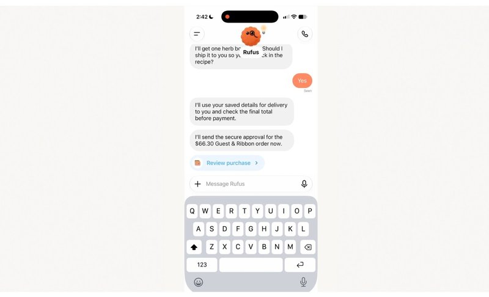
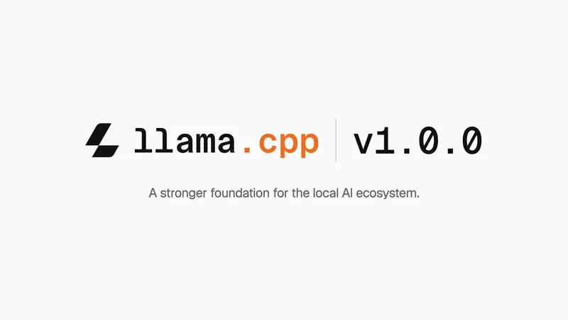

国际重点ChatGPT 推出 Wallet：AI 智能体可替你购物结账
ChatGPT's new Wallet lets AI agents shop and check out for you
OpenAI 推出 ChatGPT Wallet，让 AI 智能体代用户完成购物和结账，先向美国 Pro 用户有限开放，AI 代购开始进入支付环节
TechCrunch · 11-14 00:00
看原文

国际重点ChatGPT's new Wallet lets AI agents shop and check out for you
OpenAI 推出 ChatGPT Wallet，让 AI 智能体代用户完成购物和结账，先向美国 Pro 用户有限开放，AI 代购开始进入支付环节
DeepSeek 把 App 里的联网搜索、文件、链接解析、语音等能力开放成 API，开发者加几个参数就能做出接近官方 App 的产品。据 DeepSeek 官方 X，已回原文核对（官方指南：https://api-docs.deepseek.com/guides/build_a_chatbot）

国际实用llama.cpp v1.0.0 : A stronger foundation for the local AI ecosystem
本地跑大模型最常用的开源工具 llama.cpp 发布 1.0 正式版，标志项目进入稳定阶段，个人电脑本地部署模型更省心
openEuler 发布面向 Agentic Infra 的操作系统，国内累计装机量预计超 2200 万套，用于构建智能体基础设施
openJiuwen 发布 RSI 原生 AgentOS，支持 Agent 自由变身与持续迭代，可按需自行开发功能
量子位报道，国内多家三甲医院医生参与评测，一款国产 AI 在复杂肺癌诊疗任务上表现突出，医疗 AI 落地又进一步
Building strong safety evaluations
Anthropic 在官网发文，结合自身经验给出设计、运行和报告模型安全评估的 10 条建议，供业界判断模型是否可上线及需要哪些防护。据 Anthropic 官方 X，已回官网核对
AI agent startup LangChain hits $3B valuation
LangChain 估值升至 30 亿美元，称其智能体管理平台 LangSmith 已有 7000 家客户，AI 智能体基础设施仍受资本追捧
Microsoft 'deeply sorry' for global outage after almost 24 hours of disruption
微软 Outlook、Teams 等服务全球中断近 24 小时后公开致歉，波及多国学校、医院和政府机构，再次暴露对少数云服务的依赖
华为麒麟公开麒麟 9050 系列新一代灵犀 CPU 详情，采用 9 核 16 线程并行调度并支持内存压缩加速
宁德时代发布巧克力电池管家，提供电池可视化全生命周期检测，并预计 2027 年建成 6000 座换电站覆盖 297 座城市
新紫光集团与北汽集团成立联合创新中心，围绕 SoC 芯片和智能座舱等领域开展深化合作
Windows 0-day dropped by disgruntled researcher hands hackers System rights
一名不满的研究人员公开名为 SignDrop 的 Windows 0day 利用代码，本地用户可借此拿到 System 最高权限，补丁出来前风险较高
Elon Musk’s SpaceX to attempt double catch of Starship rocket
SpaceX 计划在下次试飞中用发射塔同时接住星舰的助推器和飞船，若成功将是可重复使用火箭的重要一步
Uber confirms hackers stole thousands of drivers' license information in data breach
Uber 确认数千名司机的驾照信息被盗，数据存放在 AI 云服务商 Fireworks AI，第三方 AI 服务的数据安全再受关注
Nvidia Has Worst Week Since Trump Tariff Selloff as Huang Exits
黄仁勋离任后英伟达股价持续承压，录得 18 个多月来最差单周表现，AI 板块情绪受到冲击
香港上调2026年经济增长预测至4.8%
海南首票“两头在外”保税航空煤油完成国际标准检验业务落地
浙江规划到2030年全域旅游综合收入达到1.5万亿元
Nscale warns it needs more cash ahead of $35bn IPO
英伟达支持的「新云」公司 Nscale 告诉投资者，需要额外融资才能履行与 Anthropic 的合同，AI 算力公司的资金压力显现
Amazon revives deal with troubled data centre venture backed by Rick Perry
亚马逊同意担任数据中心公司 Fermi 的主力租户，此前谈判破裂和董事会动荡曾令其股价大跌，AI 数据中心需求仍旺
Gold Set for Worst Week Since March as Fed Rate Hike Bets Mount
交易员押注能源推高的通胀会让美联储继续收紧，黄金本周料创 3 月以来最大周跌幅
FAA grounds US flights nationwide after ‘communication issue’
美国联邦航空管理局（FAA）因通信故障发布全国地面停飞令，全美航班暂停起飞，影响大量旅客出行
铁路 12306 宣布联合厦门航空推出国际机票产品，用户在 12306 就能买国际机票，后续还将推出国际空铁联运
新疆阿克苏地区库车市发生 5.0 级地震，具体影响以当地官方后续通报为准
网上热传的「母女吃 7 碗白米饭」暖心视频被证实是摆拍，中新网评论批评流量摆拍消耗公众善意
At least 24 killed after bus collides with truck near Kaziranga National Park
印度卡济兰加国家公园附近发生大巴与卡车相撞事故，至少 24 人遇难，其中多名是大学生
Nigeria ends 21-day Ebola contact monitoring with no secondary transmission
尼日利亚首例埃博拉病例的 62 名密接者无人发病，21 天监测期结束，疫情扩散风险下降
At least 10 killed in Guinea clashes over gold mining ban
几内亚政府禁止采金后爆发冲突，至少 10 人死亡，资源管控引发的社会矛盾加剧
Rosalía scoops historic third best album award at Latin Grammys
西班牙歌手 Rosalía 第三次拿下拉丁格莱美年度专辑奖，BBC 称这一成绩创下历史，她的国际影响力再获认可
第十三届上海国际童书展开幕，汇集国内外童书出版机构与作者，是国内重要的少儿出版盛会
第十一届博博会在海口开幕，约 600 家博物馆同场参展，观众一天能「打卡」众多博物馆
梁思成、林徽因家族文献展在福州开展，以家族文献呈现两位建筑学家及家族与近代中国的渊源
Darth Vader's Actual Lightsaber Just Sold for $4.875 Million, Breaking Star Wars Auction Records
电影中达斯·维德使用过的光剑道具拍出 487.5 万美元，创下《星球大战》周边拍卖最高纪录
Download 2027 line-up: Blink-182 to headline on festival debut
英国 Download 音乐节公布 2027 年阵容，Blink-182 首次登台即担任压轴头牌
Amid devastating Xbox layoffs, Asha Sharma announces Wolfenstein 3 and confirms new game in development at idSoftware despite reported job cut "bloodbath"
Xbox 负责人 Asha Sharma 宣布《Wolfenstein 3》在开发中，并确认 id Software 在做新作，此时正值 Xbox 大规模裁员
米哈游法务部通报打击盗版周边成果，通过刑事、行政、民事手段全链条维权，累计涉案金额超 4000 万元
The Game Awards 2026 Is Heading to Roblox for Its First-Ever Virtual Watch Party Complete With Live Voting and Exclusive Merch
The Game Awards 2026 将首次在 Roblox 举办虚拟观礼，玩家可在线观看、投票并购买虚拟周边，颁奖礼进一步拥抱年轻玩家平台
Slay the Spire 2 gets its first new character since its massively successful launch in March as part of "biggest" beta patch yet
《Slay the Spire 2》推出发售以来最大测试版更新，新增首位新角色——一位用弓的滑稽乐师，开发商称后续还会大改
It's not just Xbox and Epic: a new report reckons 40% of developers in the video games industry are using generative AI
GDC 最新报告显示约 40% 的游戏开发者在工作中使用生成式 AI，AI 正快速进入游戏开发流程